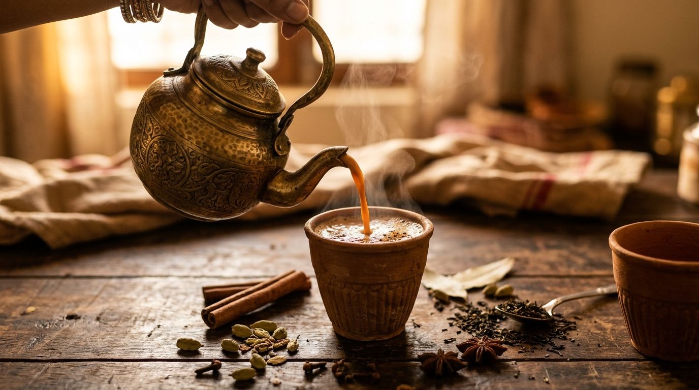
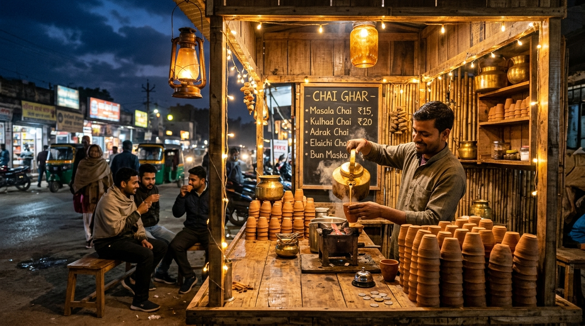
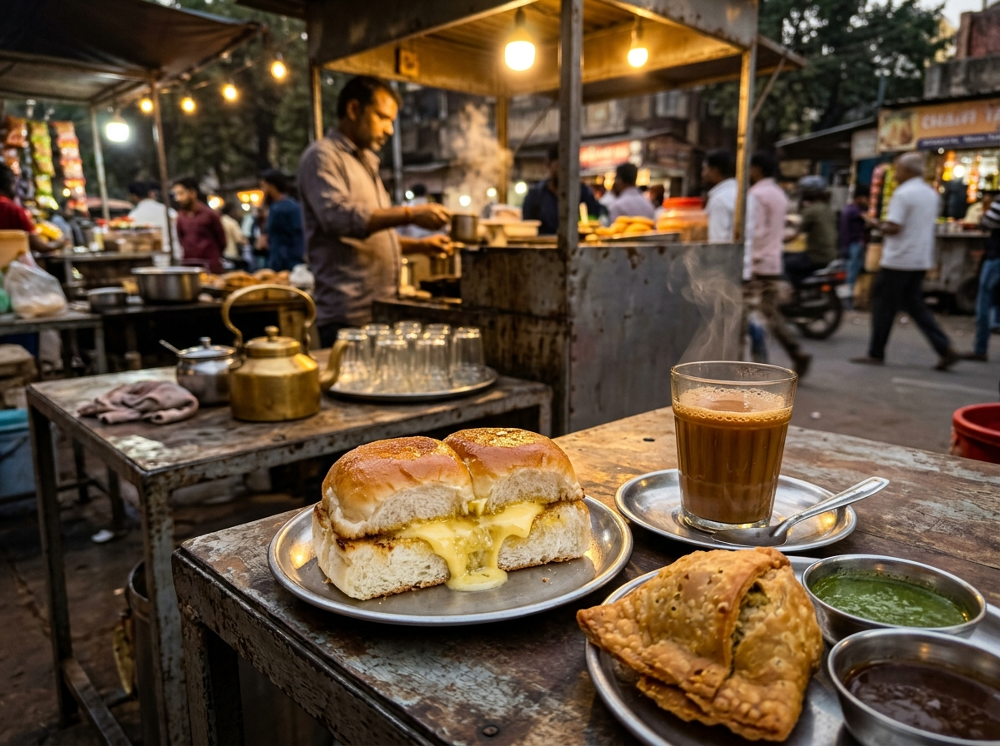

Walk-in Counter Experience Only
We do not deliver. Great chai is meant to be enjoyed piping hot in your hands, right at the stall counter while having good conversations.
Welcome to Tea Stall shop, your neighborhood offline sanctuary for slow-simmered Masala Chais, frothy Kumbakonam Filter Kaapis, and warm buttered Bun Maska. Poured fresh before your eyes, strictly offline.
We do not deliver. Great chai is meant to be enjoyed piping hot in your hands, right at the stall counter while having good conversations.

Natural Earthy Aroma
Thick Foam Decoction
In a world of cold delivery boxes and soggy paper cups, we refuse to compromise the true soul of Indian chai culture. Here is why you will only ever taste our tea right at the stall.
Chai loses its vibrant soul within 45 seconds of leaving the stove. Our chai is poured directly from boiling brass kettles into your hands.
✦ Direct From KettleDelivery means plastic lids and wax-lined cups. At our stall, you drink from handmade, biodegradable clay kulhads that infuse deep earthy mineral notes.
✦ Handcrafted TerracottaAuthentic South Indian Filter Kaapi requires the theatric "meter-pour" between brass dabara and tumbler to build rich velvet crema. Impossible in a carton!
✦ Fresh Brass DabaraThe tea stall is where friendships are forged, morning papers are read, laughter echoes, and minds unwind. You can't download street vibe.
✦ Authentic CommunityTell us your mood, and our stall kettle algorithm will recommend the ideal cup to order when you reach the counter!
The soul warmer. Rich, spicy ginger-clove aroma poured piping hot into natural clay.
Our brass kettle never stops bubbling during stall hours. Fresh crushed spices added every 25 minutes.
Morning walkers, joggers & cycling clubs gather for steaming hot Adrak Chai & Rusk.
Thick Kumbakonam Degree Kaapi pours & fresh warm Bun Maska.
Piping hot samosas, Irani chai, and cutting glasses buzzing with conversations.
Saffron Kesariya chais under warm fairy lights and chilly evening breeze.

Tea Stall shop was born from a simple belief: the best memories, the deepest philosophical debates, and the purest connections happen while standing on a footpath, holding a scalding hot clay cup.
Crafted by local potters using natural clay. Every kulhad is unglazed, porous, and returns to the earth without plastic waste.
We never use pre-packaged tea powders or artificial spice extracts. Green cardamoms and ginger are pounded fresh right at the stall counter.
Our soft Irani buns and crumbly Osmania biscuits are delivered fresh every dawn from century-old local bakeries.
Glimpses of boiling brass kettles, frothy filter coffee, and golden evening street tea gatherings.

Photos can capture the sight, but only a visit to our stall lets you smell the roasted cardamom in the air.
Visit Our Stall TodayDrop by anytime during our operating shifts. Ample roadside standing area, bicycle racks, and genuine street hospitality await you.
Corner of Banyan Tree Square, Opposite Heritage Clock Tower, Old Market Road, City Center
Morning Shift: 6:00 AM – 11:30 AM
Evening Shift: 3:30 PM – 10:30 PM
(Open all 7 days of the week)
All UPI Apps (Google Pay, PhonePe, Paytm, QR scan) & Cash accepted right at the counter.
Cyclist parking racks, pet-friendly standing benches, organic kulhad disposal bins.
Banyan Tree Square Corner
Stories, reviews, and chai notes penned down by our everyday regulars, morning joggers, and evening squads.
Visited our stall recently? Pin your note on our virtual community wall!